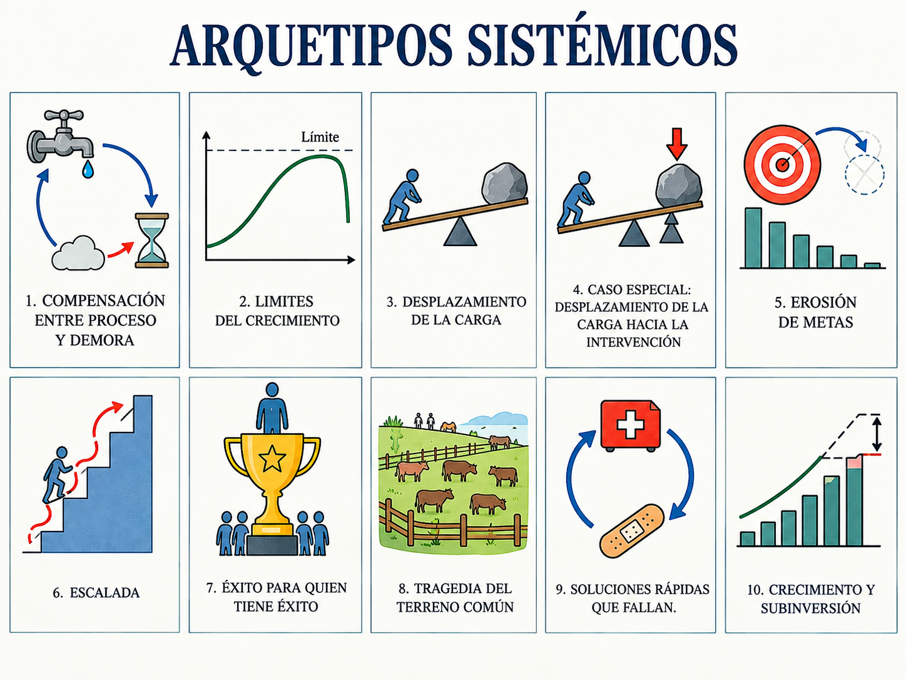

Los 10 arquetipos sistémicos

Coloca el archivo img1.png en la misma carpeta que este archivo HTML.
Índice · toca un arquetipo para ir directo a él
La Quinta Disciplina
Peter Senge propone en este libro una idea sencilla: las organizaciones que mejor funcionan son las que aprenden. Les llama organizaciones inteligentes: lugares donde la gente amplía continuamente su capacidad de crear los resultados que desea, donde nacen nuevas formas de pensar y donde todos aprenden a aprender en conjunto.
El problema de fondo
Desde pequeños nos enseñan a dividir los problemas en pedazos para entenderlos. Parece práctico, pero tiene un costo: dejamos de ver las consecuencias de nuestros actos y perdemos la sensación de formar parte de un todo más grande. El libro busca romper esa ilusión de que el mundo está hecho de fuerzas separadas.
Senge recuerda que muchas empresas desaparecen antes de cumplir cuarenta años, y que casi siempre las señales de alerta estaban a la vista. La organización, como conjunto, no supo reconocerlas.
Las cinco disciplinas
Son cinco herramientas que se desarrollaron por separado, pero que funcionan mejor juntas:
1. Dominio personalAclarar y profundizar continuamente lo que de verdad nos importa, concentrar energías, tener paciencia y ver la realidad con objetividad. Una organización no aprende más que las personas que la forman.
2. Modelos mentalesSon los supuestos, generalizaciones e imágenes muy arraigadas que influyen en cómo entendemos el mundo y actuamos, casi siempre sin darnos cuenta. Se trata de sacarlos a la luz y cuestionarlos.
3. Visión compartidaConstruir entre todos una imagen del futuro que de verdad se quiera lograr. Cuando la visión es genuina, la gente participa por convicción y no por obligación.
4. Aprendizaje en equipoEmpieza con el diálogo: dejar a un lado los supuestos y pensar en conjunto. El equipo, y no el individuo, es la unidad básica de aprendizaje de una organización.
5. Pensamiento sistémicoLa quinta disciplina, la que integra a las demás. Enseña a ver totalidades, relaciones y patrones de cambio en lugar de fotos aisladas, y a entender las estructuras que están detrás de lo que ocurre.
Las siete barreras para el aprendizaje
Senge las llama discapacidades de aprendizaje, y casi todas las organizaciones tienen alguna:
- “Yo soy mi puesto”: confundimos nuestra identidad con nuestra tarea.
- “El enemigo externo”: culpamos a algo de afuera de lo que en realidad también depende de nosotros.
- La ilusión de hacerse cargo: actuar con agresividad creyendo que eso es proactividad.
- La fijación en los hechos: mirar solo eventos aislados y no los procesos de fondo.
- La parábola de la rana hervida: no notar los cambios lentos y graduales que nos ponen en peligro.
- La ilusión de que “se aprende con la experiencia”: no podemos aprender de decisiones cuyas consecuencias ocurren lejos en el tiempo o el espacio.
- El mito del equipo administrativo: equipos de gente brillante que, bajo presión, defienden sus posturas en vez de aprender juntos.
El pensamiento sistémico en acción
Para ver las estructuras, el libro usa un lenguaje basado en la realimentación: los procesos reforzadores, que amplifican los cambios, y los procesos compensadores, que buscan equilibrio. También considera las demoras, que hacen que la causa y el efecto no se noten juntos.
A partir de esos elementos aparecen los arquetipos sistémicos: patrones que se repiten una y otra vez en empresas, familias y sociedades. Reconocerlos permite encontrar el punto de apalancamiento, esa acción pequeña y bien enfocada que puede generar cambios grandes y duraderos. Son justamente los que se presentan en la primera pestaña.
Las leyes de la quinta disciplina
Senge resume lo aprendido en once ideas fáciles de recordar:
- Los problemas de hoy derivan de las “soluciones” de ayer.
- Cuanto más se presiona, más presiona el sistema.
- La conducta mejora antes de empeorar.
- El camino fácil lleva al mismo lugar.
- La cura puede ser peor que la enfermedad.
- Lo más rápido es lo más lento.
- La causa y el efecto no están próximos en el tiempo y el espacio.
- Los cambios pequeños pueden producir resultados grandes, pero las zonas de mayor apalancamiento suelen ser las menos obvias.
- Se pueden alcanzar dos metas aparentemente contradictorias.
- Dividir un elefante por la mitad no genera dos elefantes pequeños.
- No hay culpa: nosotros y la causa de nuestros problemas formamos parte de un mismo sistema.
La idea central
Los problemas más difíciles rara vez tienen un culpable. Surgen de la forma en que las partes se relacionan entre sí. Cuando aprendemos a ver esas relaciones, y trabajamos juntos con una visión compartida y con la mente abierta, dejamos de ser víctimas de las circunstancias y empezamos a participar en la creación de nuestro futuro.